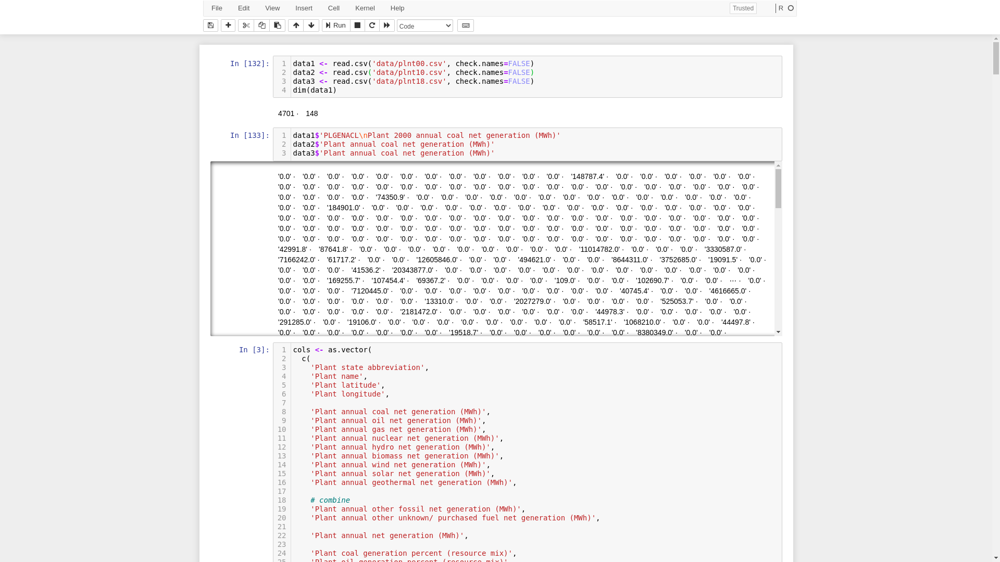

Menu: Introduction | Data | Interesting notes on the data
Data for the application may be found online on the EPA website. After removing empty data, such as power plants without any generation for a year under consideration, the total number of power plants represented in the data are 4,613, 5,393, and 8,604, for the years 2000, 2010, and 2018, respectively. Ten types of energy production are represented in the data including Coal, Geothermal, Hydro, Natural Gas, Nuclear, Petroleum, Solar, Wind, Biomass, and "other", where other is a catch-all energy category including other types of fossil fuels (e.g. tires, batteries, and chemicals) and solid waste.
Source code, documentation, data, and instructions for use are available online: (https://github.com/davidshumway/cs424/project2/).
Data source: (https://www.epa.gov/egrid/download-data). The original data is available from three files: eGRID2000_plant.xls, in particular the EGRDPLNT00 tab; eGRID2010_Data.xls, in particular the PLNT10 tab; and eGRID2018v2.xlsx, in particular the PLNT18 tab. From each of these files, data was copied by hand to a new CSV file, resulting in three CSV files: plnt00.csv, plnt10.csv, and plnt18.csv. Further changes to the data made by hand was to remove between one to four header rows from each file, which contained extraneous unnecessary information. Thus, each file was left with a single row relating its header information for each column, as well as the rows of data. All further preprocessing is performed within R each time the application loads. A Jupyter Notebook was used throughout the application-building process to aid in exploration of the datasets (Figure 1).

Figure 1. Use of a Jupyter Notebook to aid in exploration of the datasets.
Data preprocessing includes formalizing column names across the three files, converting various character strings to doubles, setting N/A values power production and percentage values to 0, removing plants with zero or less annual production, removing plants from the 2000 dataset which do not include geocoordinates (Table 1), and determining the type of power plant (e.g. Solar, Coal, Wind, etc.).
| Dataset | Total plants | Plants with 0 mWh or less of annual generation |
Latitude is N/A | Longitude is N/A |
|---|---|---|---|---|
| 2000 | 4613 | 72 | 16 | 16 |
| 2010 | 5393 | 194 | 0 | 0 |
| 2018 | 8604 | 2360 | 0 | 0 |
Read in data. Turn off column name checking as some extraneous columns have issues.
data1 <- read.csv('data/plnt00.csv', check.names = FALSE)
data2 <- read.csv('data/plnt10.csv', check.names = FALSE)
data3 <- read.csv('data/plnt18.csv', check.names = FALSE)
The 2000 dataset has a number of slight alterations as compared to 2010 and 2020 datasets:
names(data1) = sub('[^\n]+\n', '', names(data1))
names(data1) = sub('2000 ', '', names(data1))
names(data1) = sub('biomass\\/ wood', 'biomass', names(data1))
names(data1)[names(data1) == 'State abbreviation'] <- 'Plant state abbreviation'
#mwh
x <- names(data1) == 'Plant annual other fossil (tires, batteries, chemicals, etc.) net generation (MWh)'
names(data1)[x] <- 'Plant annual other fossil net generation (MWh)'
x <- names(data1) == 'Plant annual solid waste net generation (MWh)'
names(data1)[x] <- 'Plant annual other unknown/ purchased fuel net generation (MWh)'
#pct
x <- names(data1) == 'Plant other fossil (tires, batteries, chemicals, etc.) generation percent (resource mix)'
names(data1)[x] <- 'Plant other fossil generation percent (resource mix)'
x <- names(data1) == 'Plant solid waste generation percent (resource mix)'
names(data1)[x] <- 'Plant other unknown / purchased fuel generation percent (resource mix)'
From around 150 columns of original data, only 30 columns will be used:
f <- function(x) {
# Select a portion of columns and additionally rename them.
x %>%
select(
Name = 'Plant name',
State = 'Plant state abbreviation',
Lat = 'Plant latitude',
Lng = 'Plant longitude',
Coal = 'Plant annual coal net generation (MWh)',
Oil = 'Plant annual oil net generation (MWh)',
Gas = 'Plant annual gas net generation (MWh)',
Nuclear = 'Plant annual nuclear net generation (MWh)',
Hydro = 'Plant annual hydro net generation (MWh)',
Biomass = 'Plant annual biomass net generation (MWh)',
Wind = 'Plant annual wind net generation (MWh)',
Solar = 'Plant annual solar net generation (MWh)',
Geothermal = 'Plant annual geothermal net generation (MWh)',
# combine
Other1 = 'Plant annual other fossil net generation (MWh)',
Other2 = 'Plant annual other unknown/ purchased fuel net generation (MWh)',
# Other ...
AnnualGen = 'Plant annual net generation (MWh)',
PctCoal = 'Plant coal generation percent (resource mix)',
PctOil = 'Plant oil generation percent (resource mix)',
PctGas = 'Plant gas generation percent (resource mix)',
PctNuclear = 'Plant nuclear generation percent (resource mix)',
PctHydro = 'Plant hydro generation percent (resource mix)',
PctBiomass = 'Plant biomass generation percent (resource mix)',
PctWind = 'Plant wind generation percent (resource mix)',
PctSolar = 'Plant solar generation percent (resource mix)',
PctGeothermal = 'Plant geothermal generation percent (resource mix)',
# combine
PctOther1 = 'Plant other fossil generation percent (resource mix)',
PctOther2 = 'Plant other unknown / purchased fuel generation percent (resource mix)',
# PctOther ...
PctRenewables = 'Plant total renewables generation percent (resource mix)',
PctNonRenewables = 'Plant total nonrenewables generation percent (resource mix)',
Oris = 'DOE/EIA ORIS plant or facility code'
)
}
data1 <- f(data1)
data2 <- f(data2)
data3 <- f(data3)
Treat most of the columns as doubles, remove percent signs ("%"), and set NA values to 0. For example, the assumption is made that NA corresponds to 0 mWh of generation, zero percent of generation, etc.
nonnumCols <- as.vector(
c('Name', 'State', 'Lat', 'Lng')
)
for (i in names(data3)) {
if (i %in% nonnumCols) next
data1[[i]] <- as.double(gsub('[,%]', '', data1[[i]]))
data1[[i]] <- ifelse(is.na(data1[[i]]), 0, data1[[i]])
data2[[i]] <- as.double(gsub('[,%]', '', data2[[i]]))
data2[[i]] <- ifelse(is.na(data2[[i]]), 0, data2[[i]])
data3[[i]] <- as.double(gsub('[,\\%]', '', data3[[i]]))
data3[[i]] <- ifelse(is.na(data3[[i]]), 0, data3[[i]])
}
Remove plants with zero or less annual generation.
data1 <- data1[!(data1$AnnualGen <= 0),] data2 <- data2[!(data2$AnnualGen <= 0),] data3 <- data3[!(data3$AnnualGen <= 0),]In 2000, some plants do not have a corresponding Latitude/Longitude geocoordinate. In this case, the plants are removed. However, as a future work, these plants can be alternatively geolocated, e.g. via a geomapping service. In the worse case, the state's center could be used as a geocoordinate for plants without a geolocation, as all plants appear to have a corresponding state in the datasets.
data1 <- data1[!(data1$Lat == 'N/A'),] data1 <- data1[!(data1$Lng == 'N/A'),]Also in 2000, Longitude values appear to all be positive rather than negative, apparently a typo.
# 2000 data lat/lng is chr, not dbl. Not negative?? data1$Lat <- as.double(data1$Lat) data1$Lng <- as.double(data1$Lng) * -1"Other fuels" corresponds to two categories in the data, which can thus be combined into one category. A requirement of the application is to have a type for each power plant, e.g. "Coal plant", "Solar plant", etc. However, as there is no "Type" column within the dataset, instead the type can be assumed to be the type of energy most produced by the plant in a given year. As an aside, this means that a plant could change "type" between any two years in the dataset.
library(matrixStats)
data1$Other = rowSums(as.matrix(data1[,c('Other1','Other2')]))
data2$Other = rowSums(as.matrix(data2[,c('Other1','Other2')]))
data3$Other = rowSums(as.matrix(data3[,c('Other1','Other2')]))
data1$Max = rowMaxs(as.matrix(data1[,energyTypes]))
data2$Max = rowMaxs(as.matrix(data2[,energyTypes]))
data3$Max = rowMaxs(as.matrix(data3[,energyTypes]))
data1$Type = colnames(data1[,energyTypes])[
max.col(data1[,energyTypes], ties.method = "first")
]
data2$Type = colnames(data2[,energyTypes])[
max.col(data2[,energyTypes], ties.method = "first")
]
data3$Type = colnames(data3[,energyTypes])[
max.col(data3[,energyTypes], ties.method = "first")
]